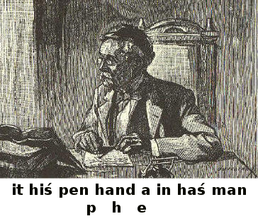
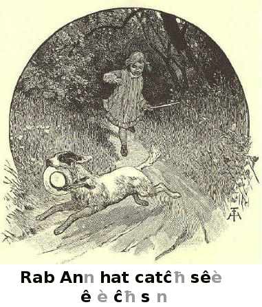
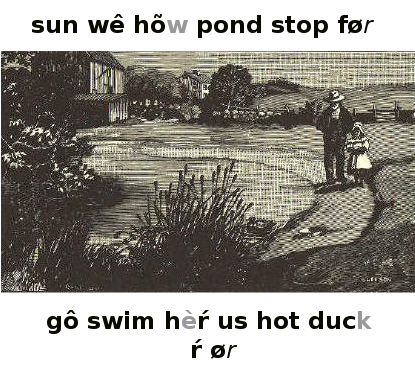
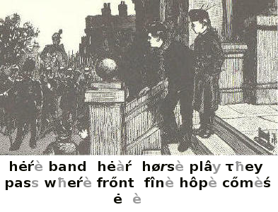

McGuffey's First Eclectic Reader, Revised Edition, by William Holmes McGuffey
Title: McGuffey's First Eclectic Reader, Revised Edition
Author: William Holmes McGuffey
Language: English
Transcribed by Don Kostuch
Transcriber's Notes:
Welcome to the schoolroom of 1900. The moral tone is plain. "She is kind to the old blind man."
The exercises are still suitable, and perhaps more helpful than some contemporary alternatives. Much is left to the teacher. Explanations given in the text are enough to get started teaching a child to read and write. Counting in Roman numerals is included as a bonus in the form of lesson numbers.
Each lesson begins with vocabulary words, followed by the description of a picture (if any) related to the lesson's reading exercise. The lesson then consists of printed text for reading and sometimes script (handwriting) for reading or copying.
Don Kostuch
MCGUFFEY'S
First
Revised Edition
McGuffey Edition and Colophon are Trademarks of
JOHN WILEY & SONS, INC.
NEW YORK - CHICHESTER - WEINHEIM - BRISBANE - SINGAPORE - TORONTO
This First Reader may be used in teaching reading by any of the methods in common use; but it is especially adapted to the Phonic Method, the Word Method, or a combination of the two.
I. Phonic Method.—First teach the elementary sounds and their representative, the letters marked with diacriticals, as they occur in the lessons; then, the formation of words by the combination of these sounds. For instance, teach the pupil to identify the characters a, o, n, d, g, r, and th, in Lesson I, as the representatives of certain elementary sounds; then teach him to form the words at the head of the lesson, then other words, as nag, on, and, etc. Pursue a similar course in teaching the succeeding lessons. Having read a few lessons in this manner, begin to teach the names of the letters and the spelling of words, and require the groups, "a man," "the man," "a pen," to be read as a good reader would pronounce single words.
II. When one of the letters in the combinations ou or ow, is marked in the words at the head of the reading exercises, the other is silent. If neither is marked, the two letters represent a diphthong. All other unmarked vowels in the vocabularies, when in combination, are silent letters. In slate or blackboard work, the silent letters may be canceled.
III. Word Method.—Teach the pupil to identify at sight the words placed at the head of the reading exercises, and to read these exercises without hesitation. Having read a few lessons, begin to teach the names of the letters and the spelling of words.
IV. Word Method and Phonic Method Combined.—Teach the pupil to identify words and read sentences, as above. Having read a few lessons in this manner, begin to use the Phonic Method, combining it with the Word Method, by first teaching the words in each lesson as words; then the elementary sounds, the names of the letters, and spelling.
V. Teach the pupil to use script letters in writing, when teaching the names of the letters and the spelling of words.
Copyright, 1879, by Van Antwerp, Bragg & Co.
Copyright, 1896, by American Book Company.
Copyright, 1907 and 1920, by H.H. Vail.
Preface
In presenting McGuffeys Revised First Reader to the public, attention is invited to the following features:
1. Words of only two or three letters are used in the first lessons. Longer and more difficult ones are gradually introduced as the pupil gains aptness in the mastery of words.
2. A proper gradation has been carefully preserved. All new words are placed at the head of each lesson, to be learned before the lesson is read. Their number in the early lessons is very small, thus making the first steps easy. All words in these vocabularies are used in the text immediately following.
3. Carefully engraved script exercises are introduced for a double purpose. These should be used to teach the reading of script; and may also serve as copies in slate work.
4. The illustrations have been designed and engraved specially for the lessons in which they occur. Many of the engravings will serve admirably as the basis for oral lessons in language.
5. The type is large, strong, and distinct.
The credit for this revision is almost wholly due to the friends of McGuffeys Readers,—eminent teachers and scholars, who have contributed suggestions and criticisms gained from their daily work in the schoolroom.
Cincinnati, June, 1879.
(iii)
A a N n
B b O o
C c P p
D d Q q
E e R r
F f S s
G g T t
H h U u
I i V v
J j W w
K k X x
L l Y y
M m Z z
Script Alphabet
a b c d e f g h i j k l m n o p q r s t u v w x y z
1 2 3 4 5 6 7 8 9 0
McGuffey's FIRST READER.
The dog.
The dog ran.
cat mat is on
c t i m s

The cat. The mat.
Is the cat on the mat?
The cat is on the mat.
it his pen hand
a in has man
p h e

The man. A pen.
The man has a pen.
Is the pen in his hand?
It is in his hand.
hen fat rat box big run from can
f b x u

A fat hen. A big rat.
The fat hen is on the box.
The rat ran from the box.
Can the hen run?
Rab Ann hat catch see
e ch s

See Rab! See Ann!
See! Rab has the hat.
Can Ann catch Rab?

Ann can catch Rab.
See! She has the hat.
Now Ann can pat Rab.
Let me pat Rab, too.
Ned eggs black left fed nest them get

Ned has fed the hen.
She is a black hen.
She has left the nest.
See the eggs in the nest!
Will the hen let Ned get them?

Let me get the black hat. Now Ned has it on his head, and he is a big man.
Come, Nat, see the big man with his black hat.
pat catch has left hat can
black eggs Rab Ann fed get
Ned is on the box. He has a pen in his hand. A big rat is in the box.
Can the dog catch the rat?
Come with me, Ann, and see the man with a black hat on his head.
The fat hen has left the nest. Run, Nat, and get the eggs.
The cat ran. Ann ran.
The man has a hat.

Do you see Nell?
Yes; she has a pan with some eggs in it.
Let me have the pan and the eggs, will you, Nell?
Has the black hen left the nest?
I will now run to catch Rab. Will you run, too?

O Ben! let me get in, will you?
Yes, if you will sit still.
Stand still, Jip, and let Ann get in.
Now, Ben, hand me the whip.
Get up, Jip!
1,2.
Kitty has a nice pet. It can sing a sweet song.
She has just fed it.
She will now put it in the cage, and hang the cage up. Then the cat can not catch it.

Look at Tom and his dog. The dog has a black spot on his back. Do you think he is a good dog?
Tom has a big top, too. It is on the box with Kitty's doll.
sun we how pond stop for
go swim her us hot duck
e o

The sun is up. The man has fed the black hen and the fat duck.
Now the duck will swim in the pond. The hen has run to her nest.
Let us not stop at the pond now, for it is hot.
See how still it is! We will go to see Tom and his top.
John rock set jump fun must
may un'der skip bank but touch
O John! the sun has just set. It is not hot, now.
Let us run and jump. I think it is fun to run, and skip, and jump.
See the duck on the pond! Her nest is up on the bank, under the rock.
We must not touch the nest, but we may look at it
The sun has set, and the pond is still.
John, Ned, Ben, Tom, and Nell stand on the bank, and look at the duck.
The dog with a black spot on his back, is with Tom. See! Tom has his hat in his hand. He has left his big top on the box.
Kitty's doll is on the rock. Nell has put her pet in the cage. It will sing a sweet song. The duck has her nest under the rock.
It is not hot now. Let us run, and skip, and jump on the bank. Do you not think it is fun?
are ink moss this tub up set' a

The pen and the ink are on the stand. Is this a good pen? The moss is on the rock. This duck can swim. Ben upset the tub.
nut did shut shall lost fox
men met step in'to hunt mud

Will the dog hunt a fox? Ben lost his hat. Shall I shut the box? I met him on the step. Did you jump into the mud? I have a nut. I met the man.
Kate old no grass dear likes
be drink milk cow out gives
a

O Kate! the old cow is in the pond: see her drink! Will she not come out to get some grass?
No, John, she likes to be in the pond. See how still she stands!
The dear old cow gives us sweet milk to drink.
Papa, will you let me ride with you on Prince? I will sit still in your arms.
See, mamma! We are both on Prince. How large he is!
Get up, Prince! You are not too fat to trot as far as the barn.
of that toss fall well Fan'ny
ball wall was pret'ty(prit-) done what
a a

O Fanny, what a pretty ball!
Yes; can you catch it, Ann?
Toss it to me, and see. I will not let it fall.
That was well done
Now, Fanny, toss it to the top of the wall, if you can.

Did you call us, mamma?
I went with Tom to the pond. I had my doll, and Tom had his flag.
The fat duck swam to the bank, and we fed her. Did you think we might fall into the pond?
We did not go too near, did we, Tom?
May we go to the swing, now, mamma?
here band hear horse play they
pass where front fine hope comes
e e

Here comes the band! Shall we call mamma and Fanny to see it?
Let us stand still, and hear the men play as they pass.
I hope they will stop here and play for us.
See the large man in front of the band, with his big hat. What has he in his hand? How fine he looks!
Look, too, at the man on that fine horse.
If the men do not stop, let us go with them and see where they go.

Bess and Robert are very happy; papa and mamma have gone to the woods with them.
Robert has a big tent and a flag, and Bess has a little bed for her doll.
Jip is with them. Robert will make him draw Bess and her doll in the cart.
"Kate, will you play with me?" said James. "We will dig in the sand with this little spade. That will be fine sport."
"Not now James" said Kate; "for I must make my doll's bed. Get Mary to play with you."
James went to get Mary to play with him. Then Kate made the doll's bed.
She sang a song to her doll, and the doll lay very still in her lap.
Did the doll hear Kate sing?
its shade brook picks all
by help stones glad soft
Kate has left her doll in its little bed, and has gone to play with Mary and James. They are all in the shade, now, by the brook.
James digs in the soft sand with his spade, and Mary picks up little stones and puts them in her lap.
James and Mary are glad to see Kate. She will help them pick up stones and dig, by the little brook.
1,3.
"What shall we do?" said Fanny to John. "I do not like to sit still. Shall we hunt for eggs in the barn?"
"No" said John; "I like to play on the grass. Will not papa let us catch
Prince, and go to the big woods?"
"We can put the tent in the cart, and go to some nice spot where the grass is soft and sweet."
"That will be fine," said Fanny. "I will get my doll, and give her a ride with us."
"Yes," said John, "and we will get mamma to go, too. She will hang up a swing for us in the shade."

Peep, peep! Where have you gone, little chick? Are you lost? Can't you get back to the hen?
Oh, here you are! I will take you back. Here, hen, take this little chick under your wing.
Now, chick, tuck your little, wet feet under you, and go to sleep for a while.
Peep, peep! How safe the little chick feels now!

This is a fine day. The sun shines bright. There is a good wind, and my kite flies high. I can just see it.
The sun shines in my eyes; I will stand in the shade of this high fence.
Why, here comes my dog! He was under the cart. Did you see him there?
What a good time we have had! Are you not glad that we did not go to the woods with John?

The pond is still. How it shines in the hot sun! Let us go into the woods where we can sit in the shade.

"Kate, I wish we had a boat to put the dolls in. Don't you?"
"I know what we can do. We can get the little tub, and tie a rope to it, and drag it to the pond. This will float with the dolls in it, and we can get a pole to push it from the shore."
"What a funny boat, Kate! A tub for a boat, and a pole for an oar! Won't it upset?"
"We can try it, Nell, and see."
"Well you get the tub, and I will get a pole and a rope. We will put both dolls in the tub, and give them a ride."

The dolls had a nice ride to the pond. A soft wind made the tub float out. Nell let the pole fall on the tub, and upset it.

"Here, Ponto! Here, Ponto!" Kate called to her dog. "Come, and get the dolls out of the pond."
Rose went under, but she did not drown. Bess was still on the top of the water.
Ponto came with a bound, and jumped into the pond. He swam around, and got
Bess in his mouth, and brought her to the shore.
Ponto then found Rose, and brought her out, too.
Kate said, "Good, old Ponto! Brave old dog!"
What do you think of Ponto?
June Lu'cy's air kind trees sing'ing blue
when pure says (sez) sky pic'nic u a

"What a bright June day! The air is pure. The sky is as blue as it can be.
Lucy and her mamma are in the woods. They have found a nice spot, where there is some grass.
They sit in the shade of the trees, and Lucy is singing.
The trees are not large, but they make a good shade.
Lucy's kind mamma says that they will have a picnic when her papa can get a tent.
James and Robert have gone into the shade of a high wall to play ball.
Mary and Lucy have come up from the pond near by, with brave old Ponto, to see them play.
When they toss the ball up in the air, and try to catch it, Ponto runs to get it in his mouth.
Now the ball is lost. They all look for it under the trees and in the grass; but they can not see it. Where can it be?
See! Ponto has found it. Here he comes with it. He will lay it at little
Lucy's feet, or put it in her hand.
boy our spoil hur rah' own coil
noise fourth such join thank a bout'
hoist pay Ju ly' playing oi
"Papa, may we have the big flag?" said James.
"What can my little boy do with such a big flag?"
"Hoist it on our tent, papa. We are playing Fourth of July."
"Is that what all this noise is about? Why not hoist your own flags?"
"Oh! they are too little."
"You might spoil my flag."
"Then we will all join to pay for it. But we will not spoil it, papa."
"Take it, then, and take the coil of rope with it."
"Oh! thank you. Hurrah for the flag, boys!"


Kitty, my pretty, white kitty.
Why do you scamper away?
I've finished my work and my lesson
And now I am ready for play.
Come, kitty, my own little kitty.
I've saved you some milk come and see.
Now drink while I put on my bonnet,
And play in the garden with me.

Frank has a pretty boat. It is white, with a black line near the water.
He keeps it in the pond, near his home. He always takes good care of it.
Frank has been at work in the garden, and will now row a while.
much one (wun) yet hun'gry
seen grand'ma corn would o

"What is that?" said Lucy, as she came out on the steps. "Oh, it is a little boat! What a pretty one it is!"
"I will give it to you when it is finished," said John, kindly. "Would you like to have it?"
"Yes, very much, thank you, John. Has grandma seen it?"
"Not yet; we will take it to her by and by. What have you in your pan,
Lucy?"
"Some corn for my hens, John; they must be very hungry by this time."

James has been to market with his mamma.
She has bought some bread, some meat, and some tea, which are in the basket on her arm.
James is trying to tell his mamma what he has seen in the market.

See my dear, old grandma in her easy-chair! How gray her hair is! She wears glasses when she reads.
She is always kind, and takes such good care of me that I like to do what she tells me.
When she says, "Robert, will you get me a drink?" I run as fast as I can to get it for her. Then she says, "Thank you, my boy."
Would you not love a dear, good grandma, who is so kind? And would you not do all yon could to please her?
does won'der moth'er oth'er bee hon'ey lis'ten flow'er

"Come here, Lucy, and listen! What is in this flower?"
"O mother! it is a bee. I wonder how it came to be shut up in the flower!"
"It went into the flower for some honey, and it may be it went to sleep.
Then the flower shut it in.
"The bee likes honey as well as we do, but it does not like to be shut up in the flower.
"Shall we let it out, Lucy?"
"Yes; then it can go to other flowers, and get honey."

Here come Frank and James White. Do you know where they live?
Frank is riding a horse, and James is driving one hitched to a cart. They are out very early in the day. How happy they are!
See how well Frank rides, and how tight James holds the lines!
The boys should be kind to their horses. It is not best to whip them.
When they have done riding, they will give the horses some hay or corn.
Slate Work

Some horses can trot very fast. Would you like to ride fast? One day I saw a dog hitched up a little cart. The cart had some corn in it.

A little girl went in search of flowers for her mother. It was early in the day, and the grass was wet. Sweet little birds were singing all around her.
And what do you think she found besides flowers? A nest with young birds in it.
While she was looking at them, she heard the mother bird chirp, as if she said, "Do not touch my children, little girl, for I love them dearly."
The little girl now thought how dearly her own mother loved her.
So she left the birds. Then picking some flowers, she went home, and told her mother what she had seen and heard.
eight ask aft'er town past ah tick'et
right half two train ding light'ning

"Mamma, will you go to town?"
"What do you ask for a ticket on your train?"
"Oh! we will give you a ticket, mamma."
"About what time will you get back? "
"At half past eight."
"Ah! that is after bedtime. Is this the fast train?"
"Yes, this is the lightning train."
"Oh! that is too fast for me."
"What shall we get for you in town, mamma?"
"A big basket, with two good little children in it."
"All right! Time is up! Ding, ding!"

It is noon, and the school is out. Do you see the children at play? Some run and jump, some play ball, and three little girls play school under a tree.
What a big room for such a small school!
Mary is the teacher. They all have books in their hands, and Fanny is reading.
They are all good girls, and would not be rude even in playing school.
Kate and Mary listen to Fanny as she reads from her book.
What do you think she is reading about? I will tell you. It is about a poor little boy who was lost in the woods.
When Fanny has finished, the three girls will go home.
In a little while, too, the boys will give up their playing.

Lucy has a new pet. Do you know what kind of bird it is? Lucy calls her Polly.
Polly can say, "Poor Poll! Poor Poll! Polly wants a cracker;" and she can mew like a cat.
But Polly and the cat are not good friends. One day Polly flew down, and lit upon the cat's back when she was asleep.
I think she knew the cat would not like that, and she did it to tease her.
When Lucy pets the cat, Polly flies up into the old apple tree, and will not come when she calls her. Then Lucy says, "What a silly bird!"
"Well, children, did you have a nice time in the woods?"
"Oh yes, mother, such a good time! See what sweet flowers we found, and what soft moss. The best flowers are for grandma. Won't they please her?"
"Yes; and it will please grandma to know that you thought of her."

"Rab was such a good dog, mother.
We left him under the big tree by the brook, to take care of the dolls and the basket.
"When we came back, they were all safe. No one could get them while Rab was there. We gave him some of the crackers from the basket.
"O mother, how the birds did sing in the woods!
"Fanny said she would like to be a bird, and have a nest in a tree. But I think she would want to come home to sleep."
"If she were a bird, her nest would be her home. But what would mother do,
I wonder, without her little Fanny?"

These boys and girls live near the sea. They have been to the beach. It is now evening, and they are going home.
John, who sits on the front seat, found some pretty shells. They are in the basket by his side.
Ben White is driving. He holds the lines in one hand, and his whip in the other.
Robert has his hat in his hand, and is looking at the horses. He thinks they are very lazy; they do not trot fast.
The children are not far from home. In a little while the sun will set, and it will be bedtime.
Have you ever been at the seaside? Is it not good sport to watch the big waves, and to play on the wet sand?
log qui'et proud pulled fish stump riv'er fa'ther
One evening Frank's father said to him, "Frank, would you like to go with me to catch some fish?"
"Yes; may I go? and with you, father?"
"Yes, Frank, with me."
"Oh, how glad I am!"
Here they are, on the bank of a river. Frank has just pulled a fine fish out of the water. How proud he feels!
See what a nice, quiet spot they have found. Frank has the stump of a big tree for his seat, and his father sits on a log near by. They like the sport.
rain out'side of'ten pit'ter say win'dow
sound pat'ter drops some'times on'ly mu'sic

I wish, Mamma you would
tell me where the rain comes
from. Does it come from the
sky? And when the little
drops pitter-patter on the window
do you think they are
playing with me? I can not
work or read for I love to listen
to them. I often think their
sound is pretty music. But the
rain keeps children at home
and sometimes I do not like
that, then.
The little raindrops only say,
"Pit, pitter, patter, pat;
While we play on the out-side,
Why can't you play on that?"
sled throw win'ter hurt ice cov'er Hen'ry next
skate ground mer'ry snow sister laugh'ing (laf'ing) pair

I like winter, when snow and ice cover the ground. What fun it is to throw snowballs, and to skate on the ice!
See the boys and girls! How merry they are! Henry has his sled, and draws his little sister. There they go!
I think Henry is kind, for his sister is too small to skate.
Look! Did you see that boy fall down? But I see he is not hurt, for he is laughing.
Some other boys have just come to join in the sport. See them put on their skates.
Henry says, that he hopes his father will get a pair of skates for his sister next winter.

Ellen, do look at Fido! He sits up in a chair, with my hat on. He looks like a little boy; but it is only Fido.
Now see him shake hands. Give me your paw, Fido. How do you do, sir? Will you take dinner with us. Fido? Speak! Fido says, "Bowwow," which means, "Thank you, I will."
Isn't Fido a good dog, Ellen? He is always so polite.
When school is out, I will try to teach him some other tricks.
"O Hattie! I just saw a large rat in the shed; and old Nero tried to catch it."
"Did he catch it, Frank?"
"No; Nero did not; but the old cat did."
"My cat?"
"No, it was the other one."
"Do tell me how she got it, Frank. Did she run after it?"
"No, that was not the way. Puss was hid on a big box. The rat stole out, and she jumped at it and caught it."
"Poor rat! It must have been very hungry; it came out to get something to eat."
"Why, Hattie, you are not sorry puss got the rat, are you?"
"No, I can not say I am sorry she got it; but I do not like to see even a rat suffer pain."
roll build grand'pa hard foam ships
hous'es long sail break wood'en blow

Mary and Lucy have come down to the beach with their grandpa. They live in a town near the sea.
Their grandpa likes to sit on the large rock, and watch the big ships as they sail far away on the blue sea. Sometimes he sits there all day long.
The little girls like to dig in the sand, and pick up pretty shells. They watch the waves as they roll up on the beach, and break into white foam.
They sometimes make little houses of sand, and build walls around them; and they dig wells with their small wooden spades.
They have been picking up shells for their little sister. She is too young to come to the beach.
I think all children like to play by the seaside when the sun is bright, and the wind does not blow too hard.
One day, Willie's father saw a boy at the market with four little white rabbits in a basket.
He thought these would be nice pets for Willie; so he asked the lad how much he wanted for his rabbits.
The boy said, "Only fifty cents, sir."
Willie's father bought them, and carried them home.
Here you see the rabbits and their little master. He has a pen for them, and always shuts them in it at night to keep them safe.
He gives them bread and grass to eat. They like grass, and will take it from his hand. He has called in a little friend to see them.
Willie is telling him about their funny ways.

Some rabbits are as white as snow, some are black, and others have white and black spots. What soft, kind eyes they have.

"Come here, Rose. Look down into this bush."
"O Willie! a bird's nest! What cunning, little eggs! May we take it, and show it to mother? "
"What would the old bird do, Rose, if she should come back and not find her nest?"
"Oh, we would bring it right back, Willie!"
"Yes; but we could not fasten it in its place again. If the wind should blow it over, the eggs would get broken."
strong round dry bill worked
sends claws flit God spring
"How does the bird make the nest so strong, Willie?"
"The mother bird has her bill and her claws to work with, but she would not know how to make the nest if God did not teach her. Do you see what it is made of?"
"Yes, Willie, I see some horse-hairs and some dry grass. The old bird must have worked hard to find all the hairs, and make them into such a pretty, round nest."
"Shall we take the nest, Rose?"
"Oh no, Willie! We must not take it; but we will come and look at it again, some time."

God made the little birds to sing,
And flit from tree to tree;
'Tis He who sends them in the spring
To sing for you and me.
"Willie, when I was feeding the birds just now, a little brown bird flew away with a crumb in its bill."
"Where did it go, Rose?"
"I don't know; away off, somewhere."
"I can guess where, Rose. Don't you know the nest we saw some days ago?
What do you think is in it now?"
"O Willie, I know! Some little brown birds. Let us go and see them."
"All right; but we must not go too near. There! I just saw the old bird fly out of the bush. Stand here, Rose. Can you see?"
"Why, Willie, what ugly little things! What big mouths they have, and no feathers!"
"Keep still, Rose. Here comes the old bird with a worm in her bill. How hard she must work to feed them all!"
fallin'g counts woes nigh be gun' griefs
stars tear morn'ing Lord each joys

When the stars at set of sun
Watch you from on high
When the morning has begun
Think the Lord is nigh.
All you do and all you say,
He can see and hear:
When you work and when you play,
Think the Lord is near.
All your joys and griefs He knows
Counts each falling tear.
When to Him you tell your woes,
Know the Lord is near.

One day, when Mary was taking a walk down the lane, trying to sing her doll to sleep, she met Frank, with his basket and cane.
Frank was a poor, little, lame boy. His father and mother were dead. His dear, old grandma took care of him, and tried to make him happy.
Every day, Mary's mother filled Frank's basket with bread and meat, and a little tea for his grandma.
"How do you do, Frank?" said Mary. "Don't make a noise; my doll is going to sleep. It is just a little sick to-day."
"Well, then, let us whistle it to sleep." And Frank, taking a willow whistle out of his pocket, blew a long note.
"Oh, how sweet!" cried Mary. "Do let me try."
turned face cried low al'most soon more cry
once(wuns) be cause'

"Yes, Mary, I will give it to you, because you are so good to my grandma."
"Oh! thank you very much." Mary blew and blew a long time. "I can't make it whistle," said she, almost ready to cry.
"Sometimes they will whistle, and sometimes they won't," said Frank. "Try again, Mary."
She tried once more, and the whistle made a low, sweet sound. "It whistles!" she cried.
In her joy, she had turned the doll's face down, and its eyes shut tight, as if it had gone to sleep.
"There!" cried Frank, "I told you the way to put a doll to sleep, is to whistle to it."
"So it is," said Mary. "Dear, little thing; it must be put in its bed now."
So they went into the house. Frank's basket was soon filled, and he went home happy.